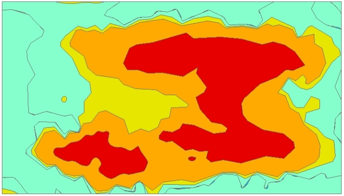

User Guide¶
Introduction¶
The plugin Radiation reconnaissance results uses interpolated radiation map in raster format as input data. In first step it generates isolines in preset levels and afterwards converts them into polygons and simplifies them to fit the limit of total 50 vertices per polygon (in fact it is 49 as first and last vertex has to have the same coordinates to close the polygon) for the text message. The output is text file in NATO APP-11 and ATP-45 compatible format and is then used as a part of a military MTF message.
Figure 1: MTF message.
Plugin was developed following the specifications and with the help provided by the specialists of the 314th NBC Warning Centre in Hostivice, Armed Forces of the Czech Republic (ACR) and National Radiation Protection Institute (SÚRO).
GUI¶
The plugin is divided into two tabs. The first of them is Main tab:
Figure 2: The main tab of plugin.
- User selects the raster input and chooses appropriate input type (dose rate
or surface activity). The raster combo box includes available layers from the
Layer panel or it is possible to upload a raster file via button
Load raster. By hitting this button, a file dialog opens and user can choose desired file (only GDAL supported files are shown). PressingOKwill insert this path to the raster selection. Click onCancelwill interrupt the choosing dialog and the raster selection will not be changed. - Click on a tool button
...opens a file dialog where user defines the path where the report file will be saved. This file is mandatory soSolvebutton is disabled until path is defined. - After pressing
Solvebutton, plugin generates simplified polygons and saves output file(s) to selected destination(s).
The second tab of the plugin is Settings tab:
Figure 3: The settings tab.
- This tab shows levels used for isolines generation. By default all levels available for selected input type are checked but user can uncheck particular ones.
- For dose rates the preset levels are 0.1, 1, 5, 10, 50, 100 and 1000 cGy/h.
- For surface activities the preset levels are 0.01, 1, 10, 100 MBq/m2.
- The last check box allows user to decide if file of simplified polygons should be created. This output is optional but by default the check box is checked.
Input data¶
Figure 4: Input file.
A raster grid of dose rate or surface activity with a format supported by GDAL library. Dose rate grid units has to be in cGy/h (centiGray/hour = 0.01 Gray/hour), surface activities in MBq/m2 (megaBecquerel per square meter).
Output data¶
Report (mandatory) Structure of the output text report is following:
/[VALUE][UNIT]/MGRS:[COORDINATE]/MGRS:[COORDINATE]/MGRS:[COORDINATE]//
where:
- VALUE = dose rate value or surface activity value; decimal separator is dot
- UNIT = used unit in XYH format; where X = C (centi), M (mili), U (micro); Y = G (gray), S (sievert); or BQM2 (becquerel per square meter)
- COORDINATE = coordinates in MGRS system, alphanumeric characters
All text must be in capital letters. The report must begin with a slash, everything between two slashes is called a field. Field 1 can contain up to 12 characters. Field 2 can have up to 50 reps (maximum 50 coordinates), and each field can contain up to 15 characters behind the MGRS identifier (eg. accuracy in meters). The last coordinate ends with a double slash (indicates the end of a line). Everything between the first slash and the double slash is called a line. Individual lines must be separated by line break. There must be no space before or behind the slash. There is no space between VALUE and UNIT. There is no space between “MGRS:” and the coordinate, the colon must be retained.
The output may contain multiple rows, each being related to another level of the measured variable (eg, 3 rows sequentially for 1CGH, 10CGH and 50CGH).
Figure 5: Output report.
File of simplified polygons (optional)
File of polygons in format Esri Shapefile (.shp) is created if check box is checked. It is saved in the same directory as input raster file.
Figure 6: File of simplified polygons.